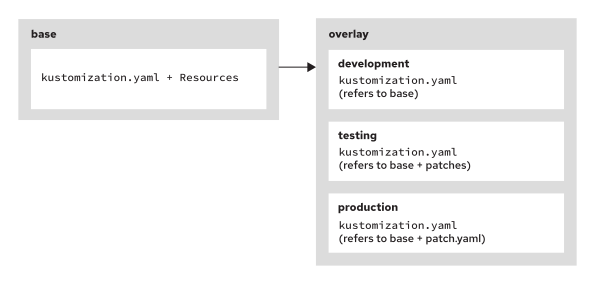

1. Manifest & Kustomize
imperative commands 命令式 means using CLIs directly. Disadvantage:
- Impaired reproducibility
- Lacking version control
- Lacking support for GitOps
declarative commands 声明式 is a way to manage resources using manifest file (YAML or JSON)
Both Kubernetes and Openshift have both imperative and declarative options. However in production, we recommend to use imperative for developing and experimenting, declarative for deploying, maintaining and documenting.
1. Manifest / 配置¶
Create Manifest¶
Where to get the YAML file?
- Use the YAML view of a resource in the web console.
-
Use imperative commands with the
--dry-run=clientoption to generate manifests. E.g.:kubectl create deployment hello-openshift -o yaml \ --image registry.ocp4.example.com:8443/redhattraining/hello-world-nginx:v1.0 \ --save-config \ --dry-run=client \ > ~/my-app/example-deployment.yaml- The
--save-configsaves the current config (in JSON format) in the annotationkubectl.kubernetes.io/last-applied-configuration. 其实就是一个版本控制的作用，用来记录上一次deployment的配置，以确保资源状态与配置文件一致。 - The
--dry-run=clientoption prevents the command from creating resources in the cluster.
- The
Doc
To see the details of the field, for example deployment.spec.template.spec:
kubectl explain deployment.spec.template.spec
Multiple src in single YAML Manifest
Use a line of --- to separate the resources
Customize Manifest¶
你可以修改以下这些内容：
- Remove empty fields
- Changing attributes such as：
namespacespec.replicasspec.template.spec.containers[].ports.containerPort
Create src with Manifest¶
- Creating with 1 Manifest file (or a URL):
kubectl create -f resource.yaml kubectl apply -f resource.yaml kubectl create -f https://example.com/example-apps/deployment.yaml - Create with all Manifest files under one directory
kubectl create -R -f ~/my-app
Update src with Manifest¶
更新资源：
kubectl apply -f resource.yaml
Compare: apply vs create
➡️ oc apply is more powerful
kubectl apply |
kubectl create |
|
|---|---|---|
| Type | declarative | imperative |
| consider the current state of a Live Resource? |
Yes, compare: 1.Live configuration 2.Manifest file 3.Configuration in the annotation last-applied-configuration |
No |
| can it update Live Resource? |
Yes | No |
⚠️ auto annotated in kubectl.kubernetes.io/last-applied-configuration |
yes | no, you need to add --save-config flag |
rollout
If an updated Manifest changes only values in Secret or ConfigMap, the updated Manifest does NOT generate new pods automatically. Instead:
- use
oc rollout restart deployment/deployment-nameto force the restart → 是重启，不是回滚到上一个版本 - if
spec.replica== 1, you can also delete the previous pod.
oc delete pod ... VS oc rollout restart deployment ...
| Feature / Behavior | oc delete pod ... |
oc rollout restart deployment ... |
|---|---|---|
| What happend? | OpenShift’s ReplicaSet will detect that a pod is missing and create a new one to maintain the desired number of replicas. | This triggers a new rollout of the deployment by restarting all pods in a controlled manner. |
| Effect | Deletes a specific pod, OpenShift recreates it | Restarts all pods in the deployment |
| Scope | Affects only the deleted pod | Affects all pods in the deployment |
| Triggers new rollout? | ❌ No | ✅ Yes |
| Secret update (mounted as volume) | ✅ Yes, automatically picked up | ✅ Yes, but not necessary |
| Secret update (used as env var) | ❌ No, old value persists | ✅ Yes, ensures new value |
| Best use case | Restarting a single pod due to issues such as: stuck process, memory leak. | Ensuring all pods restart and pick up new changes |
Patch Manifest¶
The oc patch command updates or adds fields in an existing object:
- from json
oc patch deployment hello -p \ '{"spec":{"template":{"spec":{"resources":{"requests":{"cpu": "100m"}}}}}}' -
from a patch file:
oc patch deployment hello --patch-file \ ~/volume-mount.yamlpatch 文件
上述例子中，oc patch 使用的 patch 文件 不是 一个完整的 Deployment 定义。它只需要包含你想要修改的部分。Patch 文件可以是 JSON 或 YAML 格式。举例
volume-mount.yamlspec: template: spec: containers: - name: hello-container # ⚠️ 指定要修改的容器 volumeMounts: - name: my-volume mountPath: /data volumes: - name: my-volume emptyDir: {}常见错误：
- ❌ 写成完整资源对象
- ❌ 字段名拼错或层级不对
- ❌ containers 列表中没写容器名
- ❌ 用 JSON Merge Patch 写复杂结构
Validate Manifest¶
--dry-run=server: submits a server-side request without persisting the resource.--validate=true: uses a schema to validate the input and fails the request if it is invalid. 比如json/yaml语法，数据类型，和必须要有的key-value
Compare: server vs client
两者都不会真正创建或更新资源。
--dry-run=client |
--dry-run=server |
|
|---|---|---|
| where? | 在本地进行验证，不会与 Kubernetes 服务器交互。 | 在服务器端进行验证。它将把配置文件发送到 Kubernetes API 服务器，由服务器检查文件内容是否在集群中有效（例如，字段值是否正确、资源是否存在等） |
| suitable for | 检查 YAML 文件的基本格式和结构，适合快速检查配置文件是否有明显错误 | 更严格，适合需要精确验证的场景 |
Compare Manifest¶
To review differences between live objects and manifests in current directory(.).
→ 只是比较，不进行实质更改
oc diff -f .
# or
kubectl diff -f .
Delete Resource with Manifest¶
oc delete -f .
OpenShift looks at the resource types and names in the YAML files.
Danger
Live Resources and the YAML file does NOT have to be identical!
2. Kustomize¶
Kustomize 是一个开源的Kubernetes 配置管理工具，用于对Kubernetes 清单文件进行自定义和修改。 它允许用户通过分层和声明式的方式管理和定制应用程序的配置，而无需直接修改原始的清单文件，促进了配置的复用和可维护性。我们可以用Kustomize配置多个环境，比如：
- development
- staging
- testing
- production
Info
Both kubectl and oc commands integrated the Kustomize tool.
Files¶
Kustomize根目录下有两个文件夹：一个base/，一个overlays/
Base¶
The base/kustomization.yaml file includes a list that includes all resource files under base/. E.g.:
| Example 1: | Example 2: | |
|---|---|---|
| base/ kustomization.yaml |
|
|
| File structure: |
|
|
Overlays¶
Overlays overwrites some setting without modifying the original Base. Each Overlays contains a kustomization.yaml file.

Relationship: Base + Overlays
- The
kustomization.yamlfile can refer to one or more directories as bases. - Multiple overlays can use a common base kustomization directory.
# result of `tree .`
base
├── configmap.yaml
├── deployment.yaml
├── secret.yaml
├── service.yaml
├── route.yaml
├── kustomization.yaml
overlay
└── development
└── kustomization.yaml
└── testing
└── kustomization.yaml
└── production
├── kustomization.yaml
└── patch.yaml
# overlays/development/kustomization.yaml
apiVersion: kustomize.config.k8s.io/v1beta1
kind: Kustomization
namespace: dev-env
resources:
- ../../base
extra Attributes
These are the extra Attributes provided by Kustomize to use in kustomization.yaml:
| Field | Description |
|---|---|
namespace |
Set a specific namespace for all resources. |
namePrefix |
Add a prefix to the name of all resources. |
nameSuffix |
Add a suffix to the name of all resources. |
commonLabels |
Add labels to all resources and selectors. |
commonAnnotations |
Add annotations to all resources and selectors. |
apiVersion: kustomize.config.k8s.io/v1beta1
kind: Kustomization
# common attributes / cross-cutting attributes
namespace: first-project
nameSuffix: -v2
namePrefix: chuying-
commonLabels:
owner: chuying
app: bingo
commonAnnotations:
env: test
oncallPager: 800-555-1212
Patch¶
patch 是 overlays 用于修改 base 资源的具体方式，比如 overlays/production/patch.yaml 文件帮助实现了 production overlay。
The patch mechanism has several important keys: patch, target and path.
Way 1: patch and target¶
# overlays/production/patch.yaml
apiVersion: kustomize.config.k8s.io/v1beta1
kind: Kustomization
namespace: test-env
# list of patches
patches:
- patch: |-
- op: replace # operation
path: /metadata/name # '/' indicates DOC ROOT, here it means deployment.metatdata.name
value: frontend-test
target: # target
kind: Deployment
name: frontend
- patch: |-
- op: replace
path: /spec/replicas
value: 15
target:
kind: Deployment
name: frontend
resources: # used "base"
- ../../base
commonLabels: # add label to all the resources
env: test
|-
is a block scalar indicator that handles multi-line content.
with |-:
patches:
- patch: |-
- op: replace
path: /spec/replicas
value: 15
without |-:
patchs:
- patch: "- op: replace\n path: /spec/replicas\n value: 15"
|- vs |
example: |-
Line 1
Line 2
Line 1\nLine 2 (without a trailing newline).
example: |
Line 1
Line 2
Line 1\nLine 2\n (with a trailing newline).
Way 2: patch and path¶
# patch.yaml
apiVersion: apps/v1
kind: Deployment
metadata:
name: frontend-prod
spec:
replicas: 5
apiVersion: kustomize.config.k8s.io/v1beta1
kind: Kustomization
namespace: prod-env
# list of patches
patches:
- path: patch.yaml # the name of Patch File
target: # target
kind: Deployment
name: frontend
options:
allowNameChange: true # this OPTION enables kustomization to update the name by using a patch YAML file
resources: # used "base"
- ../../base
commonLabels: # add label to all the resources
env: prod
Way 3¶
rebuild the resouce by using the same name. Kinda like a trick
# replicas.yaml
kind: Deployment
metadata:
name: frontend
namespace: default
spec:
replicas: 2
# kustomization.yaml
patches:
- replicas.yaml
CLIs¶
Example: I want to use overlay/production now:
Command |
Description |
|---|---|
oc/kubectl kustomize overlay/production |
打印查看该 Overlay 会生成的manifests |
oc/kubectl apply -k overlay/production |
use overlay/production layer. - Update/create resources. - -k flag means: applies a kustomization- 先使用 Kustomize 生成最终的 YAML 配置（但不输出），然后将其应用到 Kubernetes 集群 |
oc/kubectl apply -k base |
use base layer |
oc/kubectl delete -k overlay/production |
delete resources that were deployed by using Kustomize |
Generator¶
Kustomize has configMapGenerator and secretGenerator fields that generate configmap and secret resources. Generators help to manage the content of configmaps and secrets, by taking care of encoding and including content from other sources.
configMapGenerator¶
Definition: The Kustomize's configmapGenerator can generates cm in 3 ways. see example：
# kustomization.yaml
apiVersion: kustomize.config.k8s.io/v1beta1
kind: Kustomization
namespace: hello-stage
resources:
- ../../base
configMapGenerator:
- name: configmap-1 # 1️⃣ from file *.properties
files:
- application.properties
- name: configmap-2 # 2️⃣ from env *.env
envs:
- configmap-2.env
- name: configmap-3 # 3️⃣ from literal key-value pair
literals:
- msg="Welcome!"
- enable="true"
Usages: In the deployment file uses the generated configmap:
apiVersion: apps/v1
kind: Deployment
metadata:
name: hello
labels:
app: hello
name: hello
spec:
...output omitted...
spec:
containers:
- name: hello
image: quay.io/hello-app:v1.0
env:
- name: MY_MESSAGE
valueFrom:
configMapKeyRef:
name: configmap-3 # <-- Use the CM by name
key: msg
- name: MSG_ENABLE
valueFrom:
configMapKeyRef:
name: configmap-3
key: enable
Note
- By changing the
configMapGenerator, Kustomize will generate newconfigmapin the nextoc apply -kprocess - the
configmapgenerated by Kustomize Generator behaves a bit differently → Kustomize appends a hash to the name like this:apiVersion: v1 data: application.properties: | Day=Monday Enable=True kind: ConfigMap metadata: name: configmap-1-5g2mh569b5 # 1️⃣ from file --- apiVersion: v1 data: Enable: "True" Greet: Welcome kind: ConfigMap metadata: name: configmap-2-92m84tg9kt # 2️⃣ from env --- apiVersion: v1 data: description: literal key-value pair name: configmap-3 kind: ConfigMap metadata: name: configmap-3-k7g7d5bffd # 3️⃣ from literal key-value pair --- ...output omitted...
Danger
假设我们修改了configMapGenerator中的一个值，某个Deployment在使用生成的config。然后我用oc apply -k overlays/production应用这个修改，那么我将得到：
- 一个拥有新哈希值的cm：
hello-3-696dm8h728 - 一个使用新cm的新Deployment：
hello-55bc55ff9-hrszh
secretGenerator¶
The Kustomize's secretGenerator can generates secret also in 3 ways: file, env, or literals.
generatorOptions¶
This generatorOptions can define alternative behavior of the *Generators. For example:
1. disable hash suffix¶
Why hash suffix are needed?
我们使用oc/kubectl apply -k overlays/production应用修改时，会自动生成带有新哈希suffix的resources，保证了修改被使用到。
But in some case, the hash suffix is not needed. I can disable it with the generatorOptions:
generatorOptions: # <-- The Option
disableNameSuffixHash: true
configMapGenerator: # The Generators
- name: my-configmap
literals:
- name="configmap-3"
- description="literal key-value pair"
Warning
优先级：Kustomize 的规则是 局部设置 > 全局设置，所以局部的 disableNameSuffixHash: false 会生效。
apiVersion: kustomize.config.k8s.io/v1beta1
kind: Kustomization
generatorOptions:
disableNameSuffixHash: true # Global
configMapGenerator:
- name: global-config
literals:
- key1=value1
options:
disableNameSuffixHash: false # Local
annotations:
createdBy: "local-options"
labels:
environment: "test"
2. Add labels/annotations¶
# 这个标签将添加到当前文件中所有的 ConfigMap 和 Secret 中。
generatorOptions:
labels:
fruit: apple
annotations:
note: project-on-cloud
Tips & Tricks¶
watch
watch -d oc get deployments,pods
The watch tool comes from the procps-ng package, 是一个 Linux/Unix 系统自带的命令行工具，它用于周期性地（默认 2 秒）执行一个命令并实时刷新输出。
-dhighlights the difference- Use
Ctrl+Cto exit the watch model
CLIs¶
Print the contents of the secret:
oc extract secret/db-secrets-55cbgc8c6m --to=-
- The
--tooption specifies the destination for the extracted files. - The
-(dash) is a common convention in Unix-like systems that represents standard output (stdout).
Q&A¶
1.Deployment & updated Secret¶
Q: In Kubernetes, if I update the secret value, will the deployment get the updates automatically?
A: No. Secrets are mounted as files in pods (if used as volumes) or injected as environment variables.
Q: whats the difference between these 2 methods? Does it make difference when Secret is a file or just Env? 1. oc delete pod/xxx 2. oc rollout restart deployment/xx
A:?